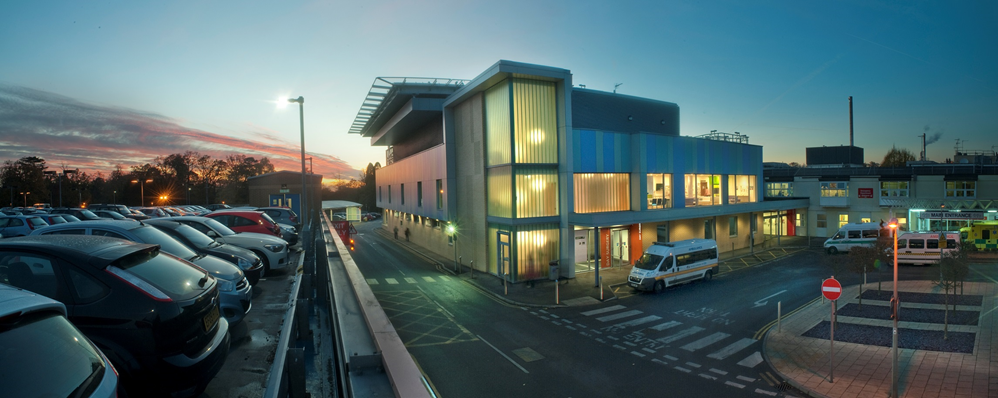
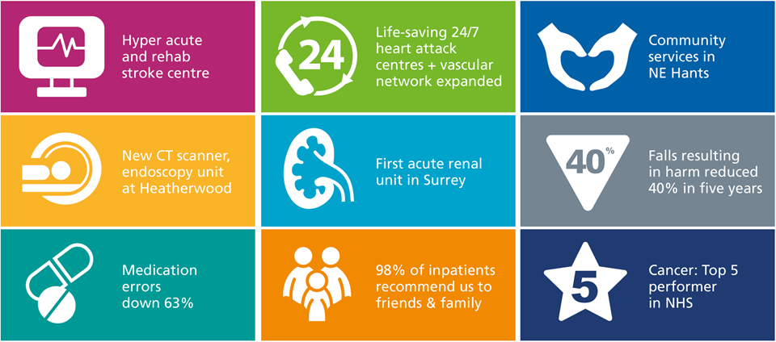
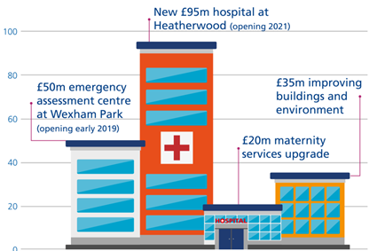
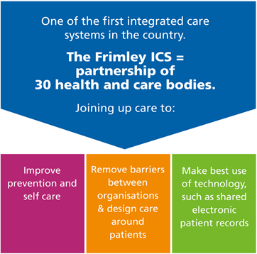
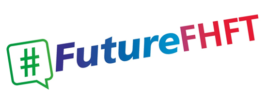

On the other side of this wall,
On the other side of this wall,
are the studios of
Radio Frimley Park,
the hospital's in-house radio station
We broadcast every hour of every day,
We broadcast every hour of every day,
so patients can listen when they want
During "live" shows, you may well see pictures here from inside the studio, as the programme goes out
As well as sending our programmes to many of the wards, via Hospedia,
As well as sending our programmes to many of the wards, via Hospedia,
patients can also listen online at www.radiofrimleypark.co.uk
Dedications line:
01276 604177
Dedications line:
01276 604177
or,
*800 from bedside Hospedia unit
We also broadcast to some of the public areas of the hospital, including
We also broadcast to some of the public areas of the hospital, including
Café Glade (turn right from here)
We also broadcast to some of the public areas of the hospital, including
Café Glade (turn right from here)
Pinetrees Restaurant
We also broadcast to some of the public areas of the hospital, including
Café Glade (turn right from here)
Pinetrees Restaurant
Outpatients 1
We also broadcast to some of the public areas of the hospital, including
Café Glade (turn right from here)
Pinetrees Restaurant
Outpatients 1
and ED (previously A&E)
Read more about us at
www.radiofrimleypark.co.uk
We are a Charitable Incorporated Organisation (no. 1174994 for those who like to know these things) run entirely by volunteers
We started serving the patients
of this hospital in 1976
and we're still going strong
If you think you could help us provide our service here for patients, staff and visitors, do get in touch -
contact details in a moment
Volunteer enquiries,
call us on 01276 604177
Volunteer enquiries,
call us on 01276 604177
or email us on membership@radiofrimleypark.co.uk
First broadcasts in October 1976
First broadcasts in October 1976
and 24/7 since November 2007
Are we funded by the NHS?
Are we funded by the NHS?
NO
Are we funded by the NHS?
NO
We are self-supporting
We raise funds to support our work in a number of ways
We raise funds to support our work in a number of ways
including providing Public Address
for many local schools, village events,
We raise funds to support our work in a number of ways
including providing Public Address
for many local schools, village events, fireworks displays and similar occasions
Can we play a request or dedication for a friend or relative that you have come to visit?
Call us on 01276 604177
Call us on 01276 604177
or, from the Hospedia unit at the bedside - dial *800
or,
you can contact us via our website
www.radiofrimleypark.co.uk
and click on
"Request"
Find us on @radiofrimley
@radiofrimley
and /radiofrimleypark
/radiofrimleypark
We're on Channel 45
on the bedside units.
Once logged on, radio is FREE

Welcome to Frimley Park Hospital
Proud to be part of Frimley Health NHS Foundation Trust
In the past five years we have developed new services and innovations...
...Invested £200m in our buildings...
...and led the way in joining up care
In 2019 we are working with staff, partners and communities to develop our vision and strategy.
We want to be outstanding tomorrow and in 10 years time.
Join the conversation about our future
Join us as a member
Frimley Health is a foundation trust.
Anyone aged over 16 can join.
It's totally free and you will be kept up to date on our news via inTouch magazine and special health events across our area.
To find out more:
- 01276 526801
- sarah.waldron@nhs.net
- www.fhft.nhs.uk/about-us/about-our-members
Frimley Health NHS Foundation Trust
Next Constituency Meeting - Tuesday, 21st May, 7 for 7.30pm
At Stoke Place, Stoke Green, Stoke Poges, Bucks
Speaker: Dr Gareth Roberts, Consultant in Respiratory Medicine
Subject: COPD and Community Services
Information about Radio Frimley Park will start here again in a moment
Radio Frimley Park is a Charitable Incorporated Organisation no.1174994